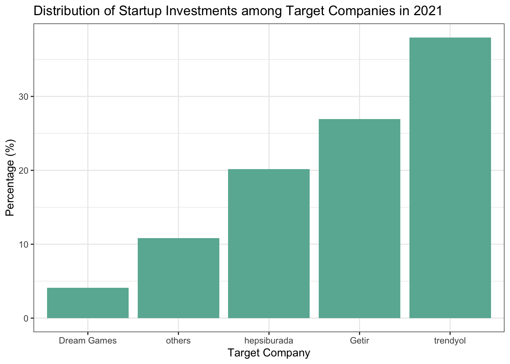
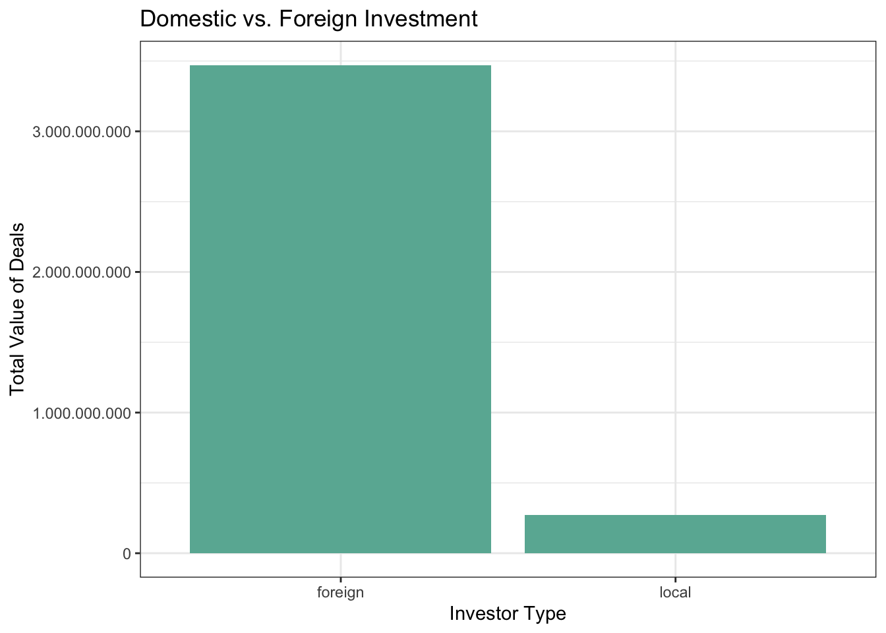

library(readxl)
library(dplyr)
library(lubridate)
library(ggplot2)
library(tidyr)
library(scales)
library(knitr)1 Assignment 1
Our dataset is a list of startups getting investments from a variety of domestic and international investors. Data is gathered from KPMG and 212’s Turkish Startup Investments Review 2021 report.
Download necessary libraries
1.1 Key Takeaways
- Top 5 sectors that are invested most in terms of total value are Ecommerce enabler, Delivery and Logistics, Gaming, SaaS and Fintech respectively.
- Most of the investment deals are sealed during period from June 2021 to August 2021
- Regarding the distribution of investments made to the target companies, first 4 startups attracted a total of 3.4 billion USD approximately and accounted for 89.2% of all investments made in 2021.
- The share of local investors, with a total investment value of 273 million USD, is limited and almost all of the investments are made by foreign investors with a total of 3.5 billion USD.
- Most of the investors by far the most are from Turkey in terms of number of deals, where as United States, UAE and Qatar are leading countries of investors in terms of value invested in startups.
1.1.1 Data Preparation
#read data
startup <- read_excel("C:/Users/yener/OneDrive/Documents/startup_deals_2021.xlsx")
# Convert spaces to underscore in column names
colnames(startup) <- startup %>%
colnames() %>%
gsub(" ", "_", .)
# Convert data type of numeric columns from string to numeric
startup$`Deal_Value_(USD)` <- as.numeric(startup$`Deal_Value_(USD)`)
# Convert percentages to numeric format
startup$`Stake_(%)` <- startup$`Stake_(%)` %>%
gsub("\\..*", "", .) %>%
gsub("%", "", .) %>%
as.numeric()
# Convert string date to date format
startup$Announcement_Date <- startup$Announcement_Date %>%
paste("01", ., sep = "") %>%
parse_date_time(., "dmy")
# New columns for months and years
startup$year <- year(startup$Announcement_Date)
startup$month <- month(startup$Announcement_Date)
str(startup)tibble [297 × 11] (S3: tbl_df/tbl/data.frame)
$ Target_Company : chr [1:297] "Abonesepeti" "Abrakadabra" "Ace Games" "Adlema" ...
$ Sector : chr [1:297] "SaaS" "Gaming" "Gaming" "Internet of things" ...
$ Investor : chr [1:297] "Keiretsu Forum, Berkan Burla" "WePlay Ventures" "Actera Group, NFX, Kristian Segerstrale, Alexis Bonte, Kaan Günay (Private Investors)" "TR Angels" ...
$ Announcement_Date : POSIXct[1:297], format: "2021-06-01" "2021-12-01" ...
$ Financial_Investor: chr [1:297] "Yes" "Yes" "Yes" "Yes" ...
$ Investor's_Origin : chr [1:297] "Turkey" "Turkey" "Turkey, USA" "Turkey" ...
$ Stake_(%) : num [1:297] 5 5 NA NA NA NA 10 NA NA 15 ...
$ Deal_Value_(USD) : num [1:297] 100000 250000 NA 120000 100000 ...
$ Investment_Stage : chr [1:297] "Seed Stage" "Seed Stage" "Seed Stage" "Seed Stage" ...
$ year : num [1:297] 2021 2021 2021 2021 2021 ...
$ month : num [1:297] 6 12 4 6 9 6 11 1 10 8 ...1.1.2 Determining top 5 sectors in terms of total value of investments
top_5_sector_table <- startup %>%
group_by(Sector) %>%
summarize(total_value = sum(`Deal_Value_(USD)`, na.rm = TRUE)) %>%
arrange(desc(total_value)) %>%
top_n(n = 5)Selecting by total_valuekable(top_5_sector_table, format.args = list(big.mark = "."))| Sector | total_value |
|---|---|
| Ecommerce enabler | 2.218.940.063 |
| Delivery & Logistics | 1.027.811.561 |
| Gaming | 221.235.284 |
| SaaS | 84.053.230 |
| Fintech | 28.894.578 |
1.1.3 Visualising monthly sectoral investments to startups in 2021
Sectors are grouped as top 5 sectors and the rest is labeled as “others”
top_5_sector <- top_5_sector_table %>%
select(Sector) %>%
pull()
print(top_5_sector)[1] "Ecommerce enabler" "Delivery & Logistics" "Gaming"
[4] "SaaS" "Fintech" # Create a new variable that classify sectors other than top_5 as others
startup <- startup %>%
mutate(group_sector = case_when(Sector %in% top_5_sector ~ Sector,!(Sector %in% top_5_sector) ~ "Other"))
# Plotting monthly investment values of top_5_sectors and others
startup %>%
group_by(Announcement_Date, group_sector) %>%
summarise(value = sum(`Deal_Value_(USD)`, na.rm = TRUE)) %>%
ggplot(aes(x = Announcement_Date, y = value, fill = group_sector)) +
geom_col() +
scale_y_continuous(labels = comma_format(big.mark = ".",
decimal.mark = ","))+
ggtitle("Monthly Total Investment Amounts / Sector in USD ")`summarise()` has grouped output by 'Announcement_Date'. You can override using
the `.groups` argument.
1.1.4 Distribution of investments among target companies.
# Obtain percentages of Target_companies in terms of value invested in 2021
# Classify companies as first 4 companies and others
startup_percent <- startup %>%
group_by(Target_Company) %>%
summarize(Total_Deal_Value = sum(`Deal_Value_(USD)`, na.rm = TRUE)) %>%
mutate(percent = Total_Deal_Value / sum(Total_Deal_Value) * 100) %>%
arrange(desc(percent)) %>%
mutate(group_company = case_when(Target_Company %in% Target_Company[1:4] ~ Target_Company, !(Target_Company %in% Target_Company[1:4])~"others"))
startup_percent[1:4,] %>%
summarize(Total_Value = sum(Total_Deal_Value), percentage = sum(percent))# A tibble: 1 × 2
Total_Value percentage
<dbl> <dbl>
1 3369481050 89.2# Draw a column chart according to group framework given above
startup_percent_group <- startup_percent %>%
group_by(group_company) %>%
summarize(group_percent = sum(percent, na.rm = TRUE)) %>%
arrange(desc(group_percent)) %>%
mutate(cum = cumsum(group_percent))
startup_percent_group# A tibble: 5 × 3
group_company group_percent cum
<chr> <dbl> <dbl>
1 trendyol 38.0 38.0
2 Getir 26.9 64.9
3 hepsiburada 20.2 85.1
4 others 10.8 95.9
5 Dream Games 4.10 100 startup_percent_group %>%
ggplot(aes(x = group_company, y = group_percent)) +
geom_col(fill = "blue")+
ggtitle("Top 4 Companies With The Largest Total Investment & Shares ")
1.1.5 Analysing Country Profile of Investors
# Generate Unique id for each transaction and calculate number of investors as a new column "count"
id_count <- startup %>%
mutate(id = 1:dim(startup)[1]) %>%
separate_rows(`Investor's_Origin`, sep = ", ") %>%
group_by(id) %>%
summarize(id_count = n()) %>%
pull(id_count)
# Add id_count to startup
startup_country <- startup %>%
mutate(id_count) %>%
separate_rows(`Investor's_Origin`, sep = ", ") %>%
mutate(new_value = `Deal_Value_(USD)` / id_count) %>%
mutate(country_name = gsub(pattern = "\r\n", replacement = "", x = .$`Investor's_Origin`)) %>%
filter(country_name != "NA")
startup_country_graph <- startup_country %>%
group_by(country_name) %>%
summarise(country_total = sum(new_value, na.rm = TRUE), country_number = n()) %>%
arrange(desc(country_total)) %>%
print()# A tibble: 22 × 3
country_name country_total country_number
<chr> <dbl> <int>
1 USA 1851560871 25
2 UAE 642850000 4
3 Qatar 359695000 4
4 Japan 358750000 1
5 Turkey 273386559. 254
6 UK 137790314. 13
7 Brazil 42666667. 1
8 France 32000000 2
9 Finland 10000000 1
10 Germany 7635684. 4
# … with 12 more rows# Graph investment deals and number of transactions for top 10 investor origin countries in 2021
startup_country_graph %>%
top_n(n = 5) %>%
ggplot(aes(x = country_name, y = country_total)) +
geom_col()+
scale_y_continuous(labels = comma_format(big.mark = ".",
decimal.mark = ","))+
ggtitle("Top Investing Countries (Total Amount in USD) ")Selecting by country_number
startup_country_graph %>%
top_n(n = 5) %>%
ggplot(aes(x = country_name, y = country_number)) +
geom_col() +
scale_y_continuous(labels = comma_format(big.mark = ".",
decimal.mark = ","))+
ggtitle("Top Investing Countries (# of Investments) ")Selecting by country_number
1.1.6 Categorizing investors as locals and foreigners
# Categorizing investors as foreign and local
# Type of investors (local/foreign) as two subgroups is obtained and used for monthly investment deals.
local_foreign <- startup_country %>%
group_by(Announcement_Date) %>%
summarize(local = sum(new_value[country_name == "Turkey"], na.rm = TRUE), foreign = sum(new_value[country_name != "Turkey"], na.rm = TRUE))
local_foreign %>%
pivot_longer(cols = c(local, foreign),names_to = "type", values_to = "deal_value") %>%
ggplot(aes(x = type, y = deal_value)) +
geom_col() +
scale_y_continuous(labels = comma_format(big.mark = ".",
decimal.mark = ","))+
ggtitle(" Domestic vs. Foreign Investment Amounts ")